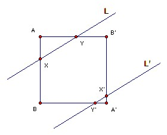

A unit square lies across two parallel lines a unit distance apart, so that two triangular areas of the square lie outside the lines. Show that the sum of the perimeters of these two triangles is independent of how the square is placed.
Solution

Let the lines be L, L'. Let the square be ABA'B', with A, A' the two vertices not between L and L'. Let L meet AB at X and AB' at Y. Let L' meet A'B' at X' and A'B at Y'. So AXY and A'X'Y' are similar. Suppose angle AXY = x. If we move L towards A by a distance d perpendicular to itself, then AX is shortened by d cosec x. If L' remains a distance 1 from L, then A'X' is lengthened by d cosec x. The new triangle AXY is similar to the old. Suppose that perimeter AXY = k·AX, then perimeter AXY is increased by kd cosec x. Since AXY and A'X'Y' are similar, perimeter A'X'Y' is shortened by kd cosec x, so the sum of their perimeters is unchanged. It remains to show that the sum of the perimeters does not depend on the angle x.
Let us move L towards A until L' passes through A', at which point the perimeter of A'X'Y' is zero. Now if h is the height of AXY (from the base XY), then 1 + h = AA' sin(45o + x) = sin x + cos x. The perimeter of AXY is h/sin x + h/cos x + h/(sin x cos x) = h(sin x + cos x + 1)/(sin x cos x) = (sin x + cos x - 1)(sin x + cos x + 1)/(sin x cos x) = 2, which is independent of x.

© John Scholes
jscholes@kalva.demon.co.uk
14 Aug 2003
Last corrected/updated 14 Aug 03